12 ottobre 2026
ICDL Intelligenza Artificiale
Certificazione AICA conseguita mediante superamento dell’esame previsto.
Numero certificato: IT2123749
Verifica il certificato ↗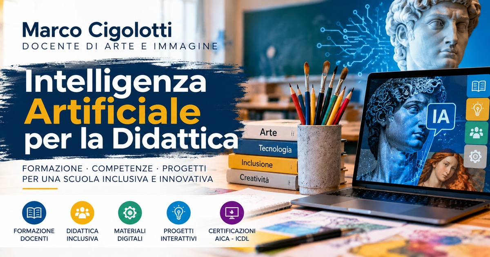
Sono Marco Cigolotti, docente di Arte e Immagine nella scuola secondaria di primo grado. Integro competenze artistiche, esperienza scolastica e tecnologie digitali nella progettazione di attività che favoriscano curiosità, partecipazione e apprendimento.
Faccio parte del TecnoTeam d’Istituto come esperto e consulente per l’intelligenza artificiale. Sviluppo quiz, giochi narrativi, video didattici e materiali accessibili, con attenzione all’uso critico e responsabile degli strumenti di IA.
Scarica la presentazione professionale (PDF)Certificazione AICA conseguita mediante superamento dell’esame previsto.
Numero certificato: IT2123749
Verifica il certificato ↗Attestato AICA n. 166 relativo al percorso «Formatori per l’uso dell’IA nella didattica» di 40 ore, associato al conseguimento della certificazione ICDL Intelligenza Artificiale.
Attività, materiali e percorsi didattici con supporto IA.
Quiz, giochi, narrazione audiovisiva e risorse interattive.
Controllo delle fonti, privacy, accessibilità e ruolo del docente.
Le esperienze pratiche descritte nel sito non equivalgono a ulteriori certificazioni AICA.
Un trailer narrativo pensato per introdurre una lezione di storia dell’arte attraverso un mistero reale. Il video suscita domande, invita a formulare ipotesi e prepara gli studenti all’indagine storica, senza anticipare tutte le risposte.
Visione introduttiva, raccolta delle prime ipotesi degli studenti, confronto con documenti storici e approfondimento sull’episodio del 1911.
Video didattico realizzato con strumenti digitali e IA. Le ricostruzioni audiovisive non sono documenti fotografici d’epoca.
Attività autentiche realizzate per la didattica dell’Arte e Immagine, documentate con schermate dei progetti originali.
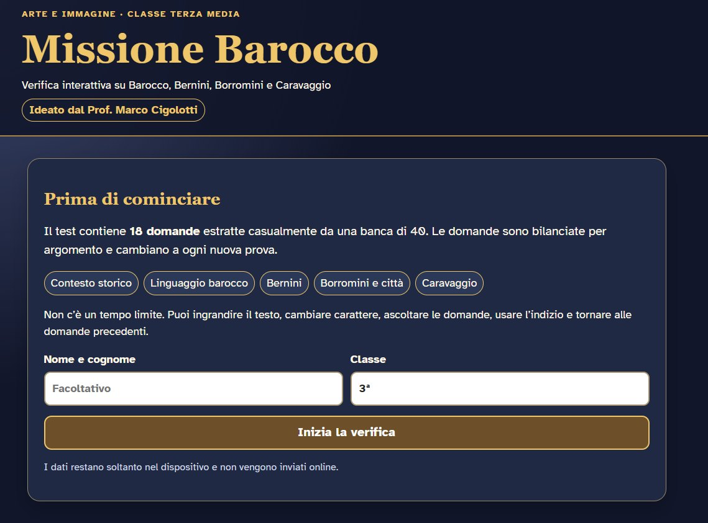
Quiz di storia dell’arte con domande casuali, spiegazioni, immagini delle opere e strumenti per migliorare leggibilità e ascolto. Un percorso di ripasso attivo con attenzione agli studenti BES e DSA.
Apri Missione Barocco ↗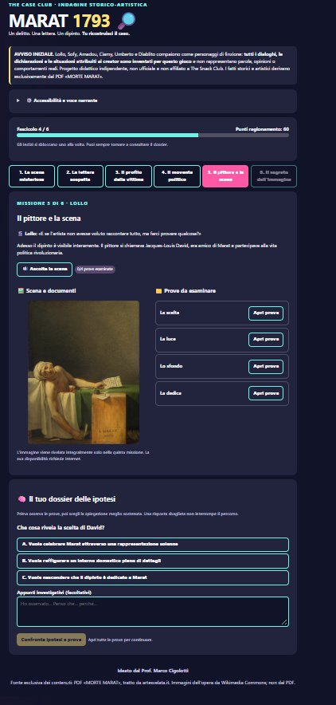
Un gioco investigativo originale su La morte di Marat di Jacques-Louis David. Sei missioni per raccogliere prove, formulare ipotesi e interpretare l’opera. Il linguaggio narrativo si ispira a The Snack Club, realtà social seguita dagli studenti; il progetto è indipendente e non affiliato.
Apri il caso MARAT ↗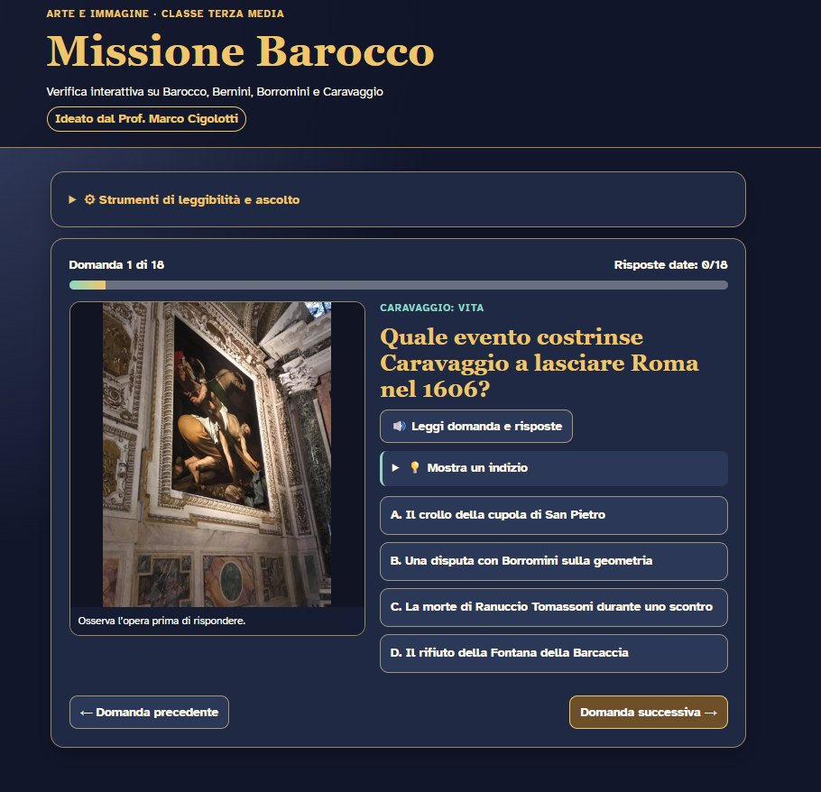
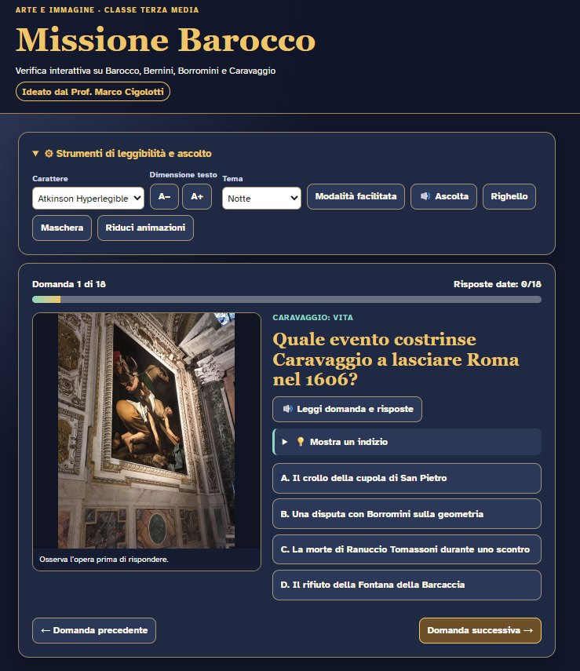
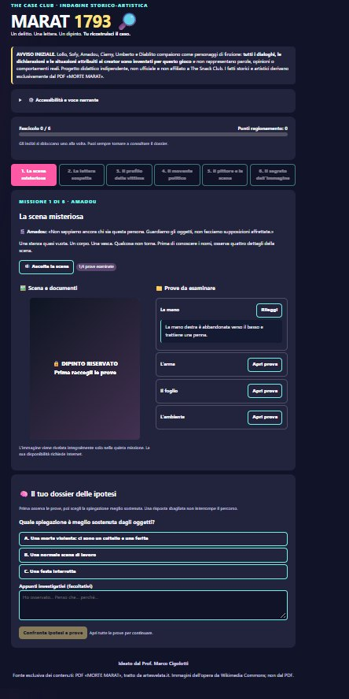
Un percorso didattico bilingue composto da dispense consultabili integralmente e da un quiz interattivo in italiano e arabo. Testi paralleli, supporti visivi e attività di ripasso sostengono l’accessibilità linguistica e la partecipazione.
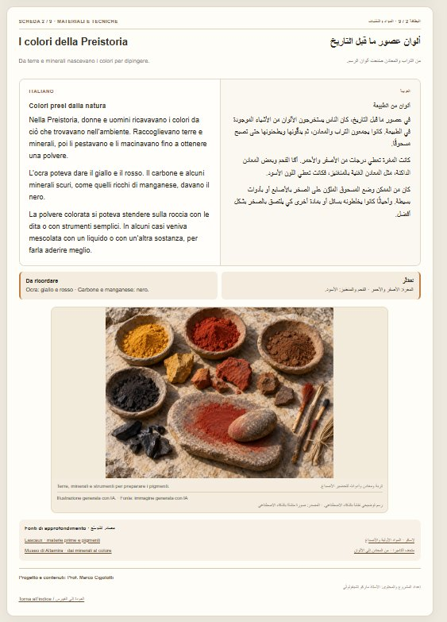
Materiali di Arte della Preistoria con spiegazioni affiancate in italiano e arabo, immagini, sintesi e fonti. Le illustrazioni generate con IA sono dichiarate nel materiale.
Consulta tutte le dispense ↗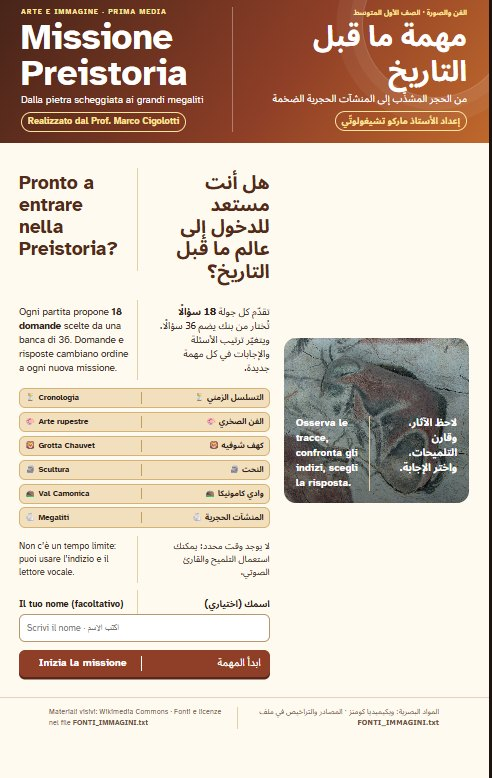
18 domande selezionate da una banca di 36, con domande e risposte in entrambe le lingue. Un percorso che affianca alle dispense un’esperienza di ripasso interattivo.
Avvia il quiz bilingue ↗Scansiona il codice per aprire il quiz da un altro dispositivo.
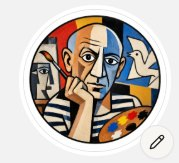
Edcafe AITerza media · 13–14 anniDialogo guidato
Un chatbot didattico ideato dal Prof. Marco Cigolotti che simula un’intervista a Pablo Picasso. Gli studenti esplorano il Periodo Blu, il Periodo Rosa, il Cubismo e Guernica attraverso domande, osservazione e ragionamento. Il tutor risponde in prima persona e propone domande di approfondimento, incoraggiando una partecipazione attiva.
Esempio didattico: alla domanda sul perché Picasso utilizzasse il blu, il chatbot richiama la morte dell’amico Carlos Casagemas e invita lo studente a riflettere sul rapporto fra colore ed emozioni.
Avvia il chatbot su Picasso ↗Il chatbot è una simulazione educativa: le risposte generate dall’IA non sono testimonianze autentiche dell’artista e vanno verificate. L’uso con gli studenti è subordinato alle verifiche e autorizzazioni previste dall’istituto e alle condizioni del servizio Edcafe. Non inserire dati personali non necessari.
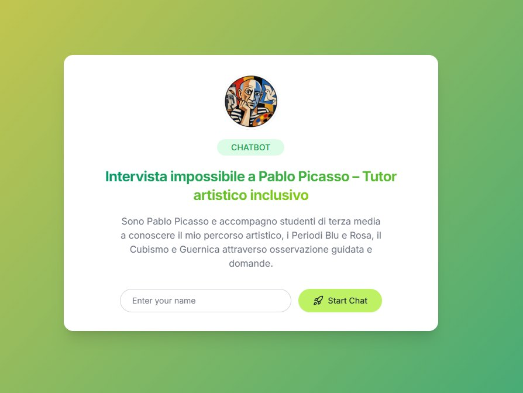
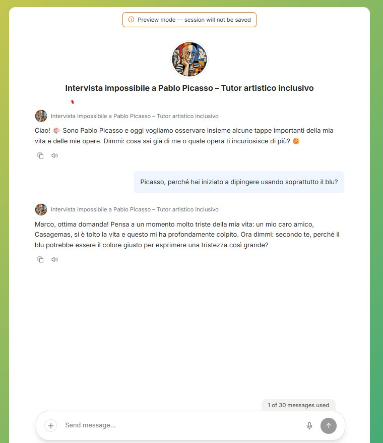
Disponibile per confronto professionale, formazione e consulenza sull’impiego consapevole dell’IA a scuola, sulla progettazione di risorse interattive e sull’accessibilità dei materiali.
Modalità: da remoto e, su accordo, in presenza nell’area di Viareggio e provincia di Lucca.
Per contattarmi, utilizza il mio profilo LinkedIn o i recapiti presenti nel curriculum professionale.
Scarica la presentazione PDF